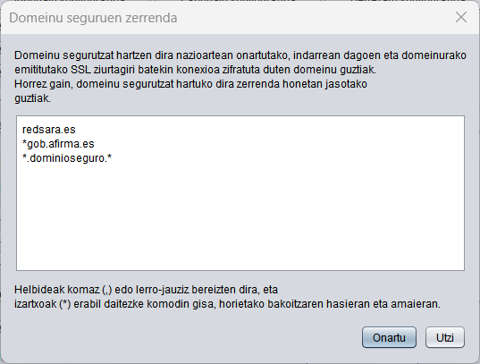

Batzuetan, Javak ez ditu domeinu batzuk asegurutzat hartzen Autofirma-rekin SSL kanal baten bidez kanpoko zerbitzu batera konektatzean. Funtzio honen bidez, Autofirman domeinu-zerrenda bat konfigura daiteke. Domeinu horiek segurutzat hartuko dira, eta arazo hori saihestu.
Domeinu horiek irudi honetan ageri den testu-koadroan gehi daitezke, koma edo lerro-jauzien bidezko bereizgailuan. Halaber, adierazten den domeinuaren hasieran edo amaieran izartxo bat komodin gisa adierazteko aukera ematen da.

Ezarritako konfigurazioa OK botoia sakatzean aplikatuko da. Utzi botoia sakatuz gero, leihoa itxiko da konfigurazioa aplikatu gabe.